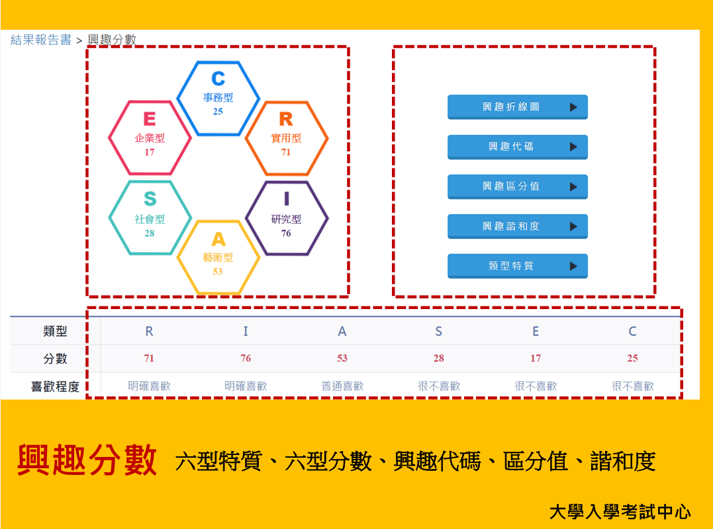

MBTI
MBTI 是一個性格分類工具，將性格分為 16 種類型，基於外向/內向、感知/直覺、思考/情感、判斷/感知四個維度，幫助你了解自己的特質。
⬇ 若還未測驗，請點選圖片進行測驗 ⬇
CEEC
CEEC 是一個興趣測驗工具。根據你的興趣分為 6 種主要類型：實用型(R)、研究型(I)、藝術型(A)、社會型(S)、企業型(E)、事務型(C)。透過這些類型的分析，可以幫助你了解自己的興趣偏好，找到最符合你性格的方向。
由於 CEEC 測驗結果可能已經遺忘，我們的系統採用更直觀的方式——讓你根據對這些類型的感受進行排序。
